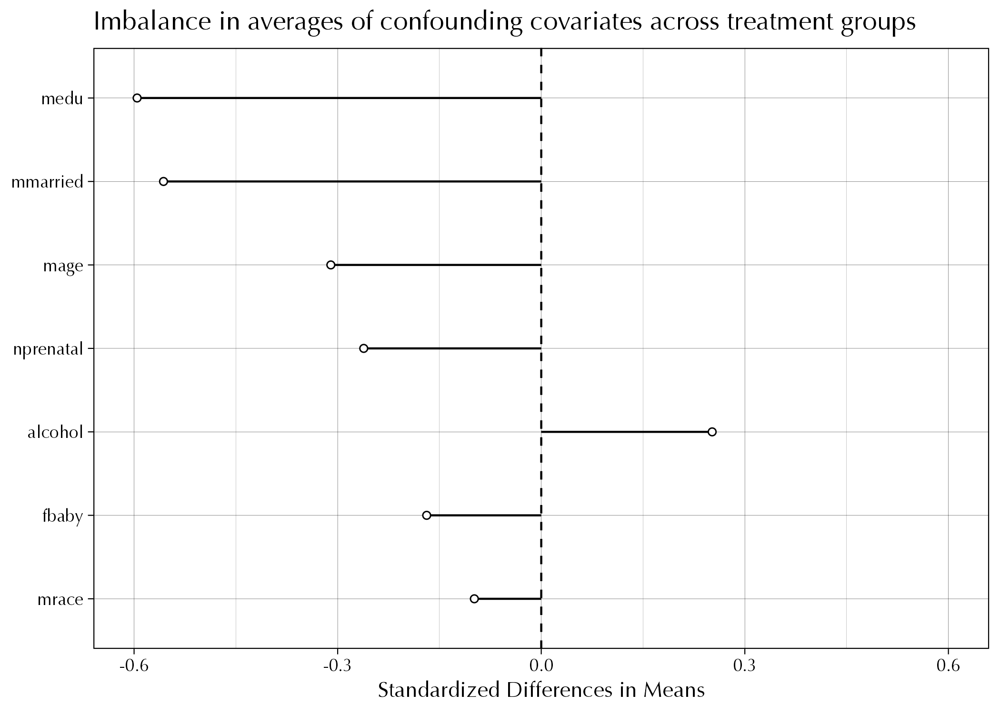

Code
library(tidyverse)
library(broom)
theme_set(theme_linedraw(base_family = "Avenir Next Condensed"))library(tidyverse)
library(broom)
theme_set(theme_linedraw(base_family = "Avenir Next Condensed"))Before we leave regression for a couple of weeks, I will ask you to do tw.
Suppose our data generating process is as follows:

\[ \begin{align} &(1) &y_i &= \beta_0 + \beta_1 x_i + \beta_2 w_i + \varepsilon_i, && \varepsilon_i \sim \text{Normal}(0, \sigma_y^2) \\\\ &(2) &x_i &= \alpha_0 + \alpha_1 w_i + u_i, && u_i \sim \text{Normal}(0, \sigma_x^2) \\\\ &&&&&w_i \sim \text{Normal}(0, \sigma_w^2) \end{align} \]
Simulation
This is what a little simulation looks like:
fork_simulation <- function(N = 1e5, a0 = 1, a1 = 1, b0 = 1, b1 = 1, b2 = 1) {
tibble(
w = rnorm(N, 0, 2),
x = a0 + a1*w + rnorm(N, 0, 2),
y = b0 + b1*x + b2*w + rnorm(N, 0, 2)
)
}
d <- fork_simulation()Omitted Variable Bias
Now suppose that we want to estimate a regression but refuse to adjust for \(w\). This means that we will estimate something like the following equation:
\[ \begin{align} (3) &&y_i = \beta_0^* + \beta_1^* x_i + \varepsilon_i^* \end{align} \]
The estimated effect of \(\beta_1^*\) is going to be biased in some way, but it’s hard to tell exactly how much.
The d dataset was created from fork_simulation() so that all \(\alpha\)’s and \(\beta\)’s are equal to one. Intuitively, we should be able to tell that \(\beta_1^*\) is gonna be greater than \(\beta_1\).
lm(y ~ x, data = d) |> tidy()# A tibble: 2 × 5
term estimate std.error statistic p.value
<chr> <dbl> <dbl> <dbl> <dbl>
1 (Intercept) 0.501 0.00821 61.1 0
2 x 1.50 0.00274 548. 0Can some high school algebra help us be a little more precise about this?
Balance
The sort of bias that we get from confounding can be interpreted more precisely as imbalance in the potential outcomes across treatment groups. This is the sort of imbalance is unlikely with randomization, but it’s almost guaranteed in observational studies.
In other words, imbalance occurs if the distributions of confounders differ for the treatment and control groups.
Overlap
Figure 6.1 shows what lack of complete overlap (with respect to \(x\)) might look like:
Lack of complete overlap or “common support” creates problems because in this setting we have treatment or control observations for which we have no empirical counterfactuals. Thus, knowledge about treatment effects is inherently limited in regions of non-overlap. Any causal inference in Figure 6.1 (a) would rely on modeling assumptions instead of having direct support from the data. In Figure 6.1 (c) causal inference is possible for the full treatment group but only for a subset of the control group.
Note. This is the exact same thing we talked about when thinking about the potential outcomes for a cervical cancer vaccine in a population for men and women.
Looking for imbalance.
Load the cattaneo2.dta data that Steve showed us in class.
d <- haven::read_dta("data/cattaneo2.dta")
d <- d |>
haven::zap_labels() |>
select(bweight, lbweight, mbsmoke, mmarried, mage, medu, fbaby, alcohol, mrace, nprenatal)
glimpse(d)Rows: 4,642
Columns: 10
$ bweight <dbl> 3459, 3260, 3572, 2948, 2410, 3147, 3799, 3629, 2835, 3880, …
$ lbweight <dbl> 0, 0, 0, 0, 1, 0, 0, 0, 0, 0, 0, 0, 0, 0, 1, 0, 0, 0, 0, 0, …
$ mbsmoke <dbl> 0, 0, 0, 0, 0, 0, 0, 0, 0, 0, 1, 0, 0, 0, 0, 0, 0, 0, 0, 1, …
$ mmarried <dbl> 1, 0, 1, 1, 1, 0, 1, 1, 1, 1, 1, 0, 1, 1, 0, 1, 1, 1, 1, 0, …
$ mage <dbl> 24, 20, 22, 26, 20, 27, 27, 24, 21, 30, 26, 20, 34, 21, 23, …
$ medu <dbl> 14, 10, 9, 12, 12, 12, 12, 12, 12, 15, 12, 12, 14, 8, 12, 12…
$ fbaby <dbl> 0, 0, 0, 0, 1, 1, 0, 1, 1, 0, 1, 1, 0, 1, 1, 0, 0, 0, 0, 0, …
$ alcohol <dbl> 0, 0, 0, 0, 0, 0, 0, 0, 0, 0, 0, 0, 0, 0, 0, 0, 0, 0, 0, 0, …
$ mrace <dbl> 1, 0, 1, 1, 1, 1, 1, 1, 1, 1, 1, 0, 1, 1, 0, 1, 1, 1, 1, 0, …
$ nprenatal <dbl> 10, 6, 10, 10, 12, 9, 16, 11, 20, 9, 14, 5, 13, 8, 4, 10, 13…We can start checking for imbalance for several covariates by examining their absolute standardized difference in means—i.e., a balance plot. I’ve included a graph that shows the absolute standardized difference in means values for a set of confounding covariates that might predict both mbsmoke and birth weight.

This question is copied from NHK’s exercises. To answer this question you need to read sections 14.1 and 14.2 of The Effect.
You want to know whether practicing cursive improves your penmanship (on a 1-10 scale). You find that, among people who don’t practice cursive, average penmanship is 5, 10 people are left-handed, 2 are ambidextrous, and 88 are right-handed. Among people who do practice cursive, 6 are left-handed with average penmanship 7, 4 are ambidextrous with average penmanship 4, and 90 are right-handed with average penmanship 6.
You want to create a set of weights that will make the treated group match the control group on handedness. Follow the process in section 14.2, paying attention to why certain numbers are going in certain positions. What weights will be given to the left, ambidextrous, and right-handed people in the control group?
What weights will be given to the left, ambidextrous, and right-handed people in the treated group?
Use the weights from part b to calculate the proportion of left-handed people in the treated group, as well as the proportion of ambidextrous people and the proportion of right-handed people. If you don’t get 10%, 2%, and 88% (or very close with some rounding error), your weights are wrong, try again.
What is the weighted average penmanship score in the treated group?
What is the effect of practicing cursive that we would estimate using this data?
CHANGE TO RNORM()